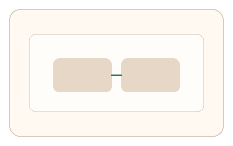
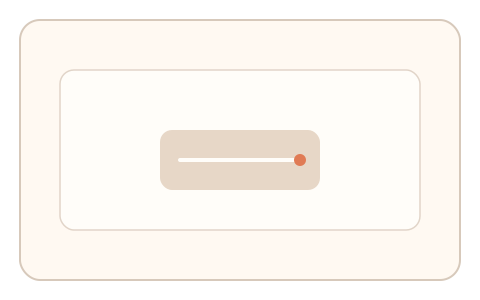
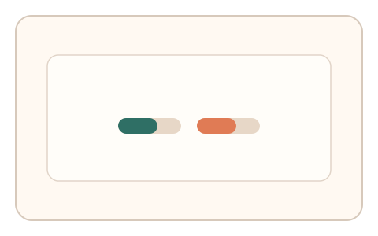

#161
Reverse Brainstorming - Round 2
已扩展
可达性镜像通道
为复杂任务提供等效低负担通道，并用任务内相对比较判定。
概念原文
对复杂任务提供等效低负担通道（例如阈值调节替代精细描绘），并采用任务内相对比较判定。
用等效替代维持安全性同时保障普适可达。
研究背景
可达性要求提供替代通道，但安全强度应保持一致。镜像通道通过相对比较与一致性判定确保等效安全。
核心机制
- 提供主任务与低负担镜像通道。
- 两通道采集可比信号。
- 使用相对比较与一致性判定。
- 统一安全阈值与风险策略。
用户流程
- 步骤 1：用户选择主任务或镜像通道。
- 步骤 2：完成所选任务并采集信号。
- 步骤 3：系统按一致标准判定。
判定信号
任务内相对差
相对比较降低通道差异影响。
替代通道完成时序
真实用户存在自然节律。
判定逻辑
两通道均需满足一致的相对判定阈值。
对抗面
- 攻击者优先选择更弱通道
- 脚本针对镜像通道优化
防御与缓解
- 通道共享核心信号与阈值
- 动态调整通道参数
- 异常通道使用率监测
可达性与风险
提供键盘与慢速模式，确保普适可达。
- 通道间差异引发误判
- 替代通道成为攻击目标
可视化状态

状态 1：双通道入口
主任务与镜像通道并列。

状态 2：镜像任务
低负担通道完成任务。

状态 3：统一判定
使用相对比较保持安全强度。
参考资料
Accessibility
说明可达性与替代通道。
Inclusive design
说明等效体验设计原则。